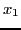
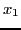
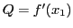

The Mean-value Theorem
Consider the quantity Q defined by the
equation
or
Let be a function formed by replacing  by
by  in the left-hand member of (13.2); that is,
in the left-hand member of (13.2); that is,
From (13.2),
 , and from (13.3),
, and from (13.3),  ;
therefore, by Rolle's Theorem (see §13.1),
;
therefore, by Rolle's Theorem (see §13.1),  must be zero for at least one value of between
must be zero for at least one value of between
 and , say for . But by differentiating (13.3) we get
and , say for . But by differentiating (13.3) we get
Therefore, since
, then also
, and
.
Substituting this value of Q in (13.1), we get the
Theorem of Mean Value13.1,
where in general all we know about is that it lies
between and .
The Theorem of Mean Value interpreted Geometrically.
Let the curve in the figure be the locus of  .
.
Figure 13.3:
Geometric illustration of the Mean value theorem.
|
Take and ; then and , giving
 and
.
Therefore the slope of the chord AB is
and
.
Therefore the slope of the chord AB is
There is at least one point on the curve between A and B (as P)
where the tangent (or curve) is parallel to the chord AB.
If the abscissa of P is the slope at P is
Equating these last two equations, we get
which is the Theorem of Mean Value.
The student should draw curves (as the one in §13.1),
to show that there may be more than one such point in the
interval; and curves to illustrate, on the other hand,
that the theorem may not be true if  becomes discontinuous
for any value of between and
(see Figure 13.2 (a)), or if
becomes discontinuous
for any value of between and
(see Figure 13.2 (a)), or if  becomes discontinuous
(see Figure 13.2 (b)).
becomes discontinuous
(see Figure 13.2 (b)).
Clearing (13.4) of fractions, we may also write
the theorem in the form
Let
; then
, and since is a
number lying between and , we may write
where  is a positive proper fraction. Substituting
in (13.4), we get another form of the
Theorem of Mean Value.
is a positive proper fraction. Substituting
in (13.4), we get another form of the
Theorem of Mean Value.
david joyner
2008-08-11